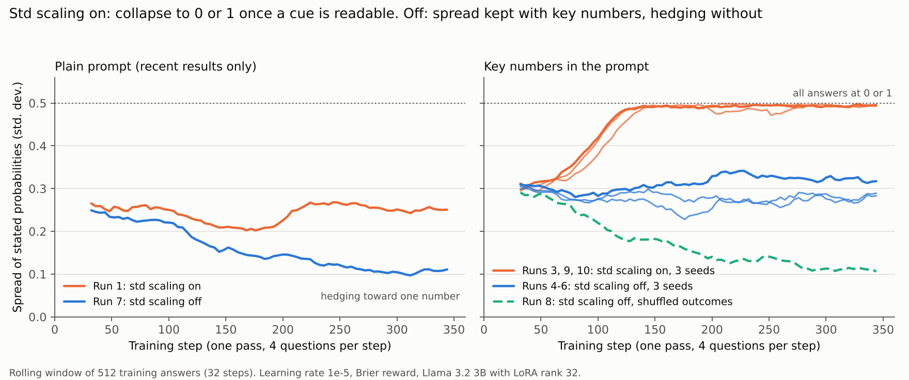

Preprint · October 2026
When Does Brier-Reward RL Help a Small Language Model Forecast?
Controlled Experiments on Kalshi Economic Markets
University of Pennsylvania
In brief
We train Llama 3.2 3B Instruct with GRPO and a Brier-score reward on resolved Kalshi questions about U.S. economic releases. The evidence in every prompt is held fixed (each series' recent results), so what RL changes can be compared with simple rules built from the same numbers.
- How the evidence is presented matters first. Listed plainly, the recent results give the untrained model near-chance discrimination (AUC 0.52). A short block that states the threshold comparisons raises it to 0.76, with no training.
- With that block and GRPO's std scaling off, RL improved both Brier score and AUC. On a later test split scored once against precommitted comparisons (479 questions, 13 announcement clusters): Brier −0.025 (95% interval −0.034 to −0.016), AUC +0.033 (+0.018 to +0.054).
- With std scaling on, every seed collapsed onto a lookup rule. More than 98% of answers became exactly 0 or 1, copying "has the latest result already crossed the threshold?", even though a calibrated version of that rule earns a higher Brier reward.
- Simple models stay competitive. The trained models do not outperform a logistic regression or gradient-boosted trees on the same features, and the market price is far ahead of everything.
What std scaling does during training

Test-split scores
| Method | Brier ↓ | Log loss ↓ | AUC ↑ |
|---|---|---|---|
| Market price (never shown to the model) | 0.073 | 0.236 | 0.967 |
| Simple models on the same evidence | |||
| Gradient-boosted trees, key numbers + series | 0.125 | 0.384 | 0.906 |
| Logistic regression, key numbers | 0.130 | 0.400 | 0.899 |
| Counting rule | 0.138 | 0.461 | 0.880 |
| Latest-result rule (0/1) | 0.193 | 0.889 | 0.804 |
| Llama 3.2 3B, key-numbers prompt | |||
| Untrained | 0.165 | 0.503 | 0.855 |
| RL, std scaling off (runs 4–6) | 0.139 | 0.437 | 0.888 |
| RL, std scaling on (runs 3, 9, 10) | 0.187 | 0.846 | 0.818 |
| RL, shuffled outcomes (run 8) | 0.226 | 0.645 | 0.828 |
479 priced test questions, June to October 2026. Groups of three seeds are averaged. The comparisons and the rules for reading them were committed before any language model was scored on the test split; the paper's Appendix G gives the full timeline.
Abstract
We study whether reinforcement learning with a Brier-score reward improves how a small language model uses fixed forecasting evidence. We train Llama 3.2 3B Instruct with GRPO on 1,391 resolved Kalshi questions about scheduled U.S. economic releases; each prompt supplies only the series' recent results, all public before the question was asked. Listed plainly, these results give the untrained model little discrimination (validation AUC 0.52, against 0.85 for a counting rule over the same numbers); a deterministic block stating the threshold comparisons raises it to 0.76. With this block and GRPO's group-standard-deviation scaling disabled, three training seeds improved both Brier score and AUC. On a later test split of 479 questions in 13 announcement clusters, the model comparisons met their precommitted criteria: against the untrained model with the same prompt, Brier changed by −0.025 (95% interval −0.034 to −0.016) and AUC by +0.033 (+0.018 to +0.054), and these runs beat the runs with the scaling enabled in log loss and calibration error. With the scaling enabled, all three seeds collapsed onto a latest-result heuristic, answering almost only 0 or 1 on validation and test questions, although a calibrated version of that heuristic earns a higher Brier reward. With the scaling disabled, the plain-prompt and shuffled-outcome runs contracted toward a constant. The trained models did not outperform a logistic regression or gradient-boosted trees on the supplied features. Under our one-pass training budget, only the structured prompt with std scaling disabled showed supported improvements in both Brier score and AUC. All experiments ran on free Kaggle T4 GPUs, about 30 GPU-hours in total.
Cite
@misc{srikanth2026brier,
title = {When Does Brier-Reward {RL} Help a Small Language Model
Forecast? Controlled Experiments on {Kalshi} Economic Markets},
author = {Srikanth, Anirudh},
year = {2026},
month = oct,
note = {Preprint},
url = {https://anisrikanth.github.io/calibrated-forecasting-rl/}
}